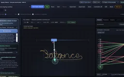
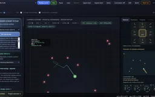
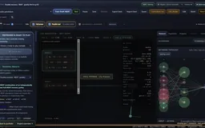

BalanceForge
A learning workbench built around balancing, dodging, writing and putting. Follow observations through a neural policy into physical motion, then inspect how training changes the network and its behavior. The signals, policy and learning process stay visible beside the task.
Explore connections
Open the application, then follow what changes
See learning happen inside a physical task. BalanceForge exposes the loop from observations to network activity, actions and training updates, with balancing, dodging, writing and putting giving those internal signals a visible consequence.
-
01
Set a physical goal
Choose the mechanics, observations, actions and reward for a task you can watch.
-
02
Follow the policy
Connect sensor inputs, network activations and action outputs to the resulting motion.
-
03
Watch learning change it
Inspect NEAT topology, CMA-ES search or PPO training signals; explore the differentiable-simulation route.
-
04
Try it and inspect
Disturb a saved controller, replay its behavior and compare it with analytical references.
Watch topology and behavior evolve
I wanted to understand learning through physical tasks I could watch and interact with. Building the machinery from the ground up lets me follow the whole loop: what a controller senses, how its network responds and how training changes its behavior. The workbench makes established learning methods tangible through their moving parts.
The main route is neuroevolution: NEAT changes network connections and weights while a curriculum raises gravity and widens starting angles. CMA-ES searches a fixed architecture; PPO supplies a genuine actor–critic backpropagation route. A compact ready-to-play menu groups controllers by task and colors their technique. Pendulum entries combine their recorded release with a hold-and-nudge toggle, while a separate selector starts fresh training.
A frozen generation-120 NEAT policy recovered and finished upright in all 40 unseen near-hanging starts and 37 of 40 starts near ±90°, over 60-second tests at gravity 1000. It uses a bounded velocity servo and no upright helpers. The same checkpoint still fails at some intermediate angles.
The double pendulum asks a stricter control question: direct acceleration, without a target-velocity servo or upright assistance. A six-ReLU controller optimized with CMA-ES passed 40 of 40 fresh 90-second trials near the standard (55°, 38.5°) release at gravity 850. Both rods stayed above horizontal, with no rail contact. Its wider ±600-pixel track and linked release geometry are part of the result; independently placing both rods near 55° lies outside its reliable range.
Full NEAT continuation now recovers from the linked 42° release at gravity 850 on a wider ±600-pixel track. The earlier policy passed zero of the same 40 fresh starts; the evolved policy passed all 40 at each of three physics resolutions. Its topology changed from 10 to 11 hidden nodes and from 66 to 51 enabled edges. Independent local holds also passed repeated impulse-40 nudges. This is measured high-gravity recovery, not a below-horizontal swing-up.
PPO learns from actual simulator trajectories and backpropagates through the actor and value objectives, without needing physics derivatives. Its frozen double holder also catches both rods from below horizontal when given consistent inward angular velocities. All 80 fresh 90-second starts without extra pushes passed at each of three physics resolutions on the original rail. The interface calls this momentum-assisted swing-up: the supplied initial kinetic energy is essential, and this is not swing-up from rest. Replay enables optional random tip impulses after the first catch, making later recovery an explicitly disturbed experiment. Policy/value loss, gradients, KL and exploration remain visible during fresh PPO training.
Make the difficulty itself inspectable
A triple-pendulum student learned from a local LQR teacher derived from the actual point-mass simulation. Full NEAT then changed its weights and grew the topology from 16 to 17 ReLU hidden nodes. At gravity 1000, with direct acceleration and the original track, the frozen generation-180 policy survived all 40 fresh one-minute impulse-16 sequences at each of three physics resolutions. Every link remained above horizontal without rail contact. The original student failed the same stronger-nudge comparison. The teacher is not called during neural playback; the initialization and subsequent evolution are both explicit.
The Control tab instruments each actual link, phase space, rail use, command saturation, observation clipping and neural activity. Plots now follow display frames while measurements retain every physical step, including brief failures. Its curriculum trace separates displayed-rollout evidence from population or held-out results. A controlled probe keeps the network frozen while testing release angles, finer physics, stronger acceleration, nudges and zero control.
A larger acceleration audit covered six saved double-pendulum neural policies, including legacy entries. Doubling acceleration produced 20/20 NEAT catches from both rods at 140° at 120 Hz, but only 2/20 and 0/20 at finer physics steps in the original audit; all successful runs touched the rail. Every network retained 20/20 recorded-release holds without rail contact at all three resolutions. The NEAT and PPO high-acceleration cases are now playable as explicitly labelled 120 Hz experiments. Each demo shows its recorded physics rate; temporary overrides preserve controller cadence, identify departures from the recorded settings and expose numerical sensitivity directly.
Finite differences of the production simulation show full local controllability rank near upright, while the old triple observations hide an independent velocity direction. Signed angular-rate inputs repair that local information loss. These measurements guide the next experiment; they do not prove global swing-up is reachable. An early neural refinement passed nominal tests but failed finer-step checks, making numerical sensitivity part of the visible engineering evidence.
A same-plant trajectory teacher found nominal large-angle swing-up, but its result changed under physics refinement. A neural student fitted its actions closely yet failed all six autonomous catch tests; teacher-initialized PPO also failed the sustained catch despite rising above-horizontal occupancy. The study exposes these failures to distinguish a good regression fit, a high reward and a robust controller.
Make the reference solution part of the experiment
Both Fourier mechanisms have fixed arm lengths derived from the complete target curve. The analytical version supplies harmonic speeds and initial phases; the CMA-ES controller chooses variable angular velocities from arm state, current tip-to-target error and a loop-phase clock. It trains repeatedly on that curve, without reading the full curve array at each decision. This is learned tracking of known geometry, not learning the Fourier decomposition or generalizing to unseen curves.
The single-pendulum reference pumps energy into the swing and hands control to local LQR. Double and triple references use nonlinear trajectory optimization with time-varying feedback, then local LQR. They integrate their live rigid-body state, accept physical disturbances and passed fresh nudge and timestep-refinement checks. Their driven-pivot equations are explicitly distinct from the neural examples’ point-mass constraint model. Each reference defaults to swing-up followed by nudges; local hold is one toggle away.
A compact controller strip names what is running, whether its behavior is learned, and its current phase. Measured catch-time ranges are in simulation seconds and apply only to the recorded setup without extra manual pushes. These are empirical ranges, not countdowns or guarantees; an observed catch still permits motion. An idle arcade preview shuffles working frozen models and labelled references; the first click, key or scroll hands over control. It pauses when hidden, respects reduced motion and never starts training.
Give each learned mechanism a visible task
Balancing, writing, putting and dodging make a policy's choices easy to relate to. I am interested in the awkward solutions too: an imperfect learned motion can suggest expressive character movement or a game mechanic worth exploring.
A two-link signing mechanism coordinates a cart, rotary servo and telescoping links along a 200-pixel-radius swash. The saved CMA-ES network averages 15.7 pixels of tracking error after a full warm-up period across ten nearby starts, against 122.7 for zero commands. It observes upcoming targets, but receives no analytical motor trajectory. Its shrinking reward tolerance reached 60 pixels; a matched fixed-tolerance run performed nearly as well.
The English-word experiment now trains acquisition explicitly. A small CMA-ES controller learns cart and telescope feedback from neutral commands while the physical joint servo holds its rest bend. All 40 unseen nearby starts kept every complete word below 20 pixels mean pen error: 12.4 pixels on the first loop, 8.3 thereafter. A matched two-seed comparison tested fixed and shrinking tolerance with identical budgets; both worked, so the large improvement cannot be attributed to curriculum alone. The first B retains an approach stroke and numerical sensitivity remains at 480 Hz. Known future-target cues, the approximate ink and the exact spring/servo scene are explicit.
A learned golf swing clears two movable obstacle balls and traverses two fixed domes, then leaves the struck ball to passive physics. It sank all 128 held-out shots within the tested hole and tilt range. The controller is calibrated to this course: it observes ball and hole state, not an arbitrary obstacle map. A compact terrain starter reads local tiles and times jumps, finishing 125 of 128 unseen easy courses. Removing tile observations reduced that to four.
The harder golf course adds two ridges, a movable bumper and a low rebound beam. Contact with the beam is legal. Correcting separating-contact impulses and conditioning saturated neural weights let CMA-ES refine the same course into 200/200 fresh sinks at native 120 Hz and 199/200, 197/200 and 200/200 at 240, 480 and 960 Hz with fixed-rate commands. One club strike launches the ball; later motion is passive. The known layout and tested hole range remain part of the result, rather than a claim of arbitrary-course golf.
A 416-parameter CNN now drives the hard terrain generator. Two local solid/hazard planes pass through four learned convolution filters and max-pooling, then join six body scalars in a dense controller. Separable CMA-ES learned all parameters; the frozen policy completed 72 of 80 untouched hard courses. Untrained, zero-command and raster-masked controls completed none. The live Perception circuit exposes every input plane, filter map, pooled map, body channel and action request. The occupancy sensor and grounded jump-impulse rule are explicit; eight test failures remain.
Measure the behavior that the score is supposed to represent
The model bank retains the learned moving-hole putter and original dense/CNN dodge policies as comparisons. A new CMA-ES-trained scorer ranks nine supplied physical forecasts: 33/40 fresh twenty-second mixed-attack trials at spawn-rate setting 3 survived, with 0.010 registered hits/s in continuous tests. The existing CNN and dense actors survived 0/40 and registered 0.300 and 0.259 hits/s; the hand-designed planner survived 40/40. The physical lookahead is supplied, while its scoring weights are learned. These are comparisons of available checkpoints, not equal-compute architecture rankings.
Removing bullet velocity from the new forecast drops survival to 0/40; restricting it to the nearest eight bullets leaves 33/40 at this density. Motion information is the supported finding. The right panel exposes real scores, forecasts and historical board frames; the history is diagnostic, not a claimed temporal-network input. The explanation separates a temporal CNN, which must learn motion features from images, from a compact scorer supplied with velocity and nine model forecasts. A temporal CNN trained with matched resources remains an untested comparison.
Engineering checks cover mechanics, replay timing, serialization and observation semantics. Signed angular-rate inputs preserve rotation direction when a pendulum link becomes horizontal. The double recovery checkpoint also passed finer-step physics checks with the same control rate. Saved records preserve the complete scene, observation layout and weights; replay outcomes count actual sinks, course completion or sustained holds. The phase-space CNN balancer and differentiable lab remain supporting studies.
The spatial-dodge proof of concept restores two grid-shaped input arrays and a NEAT graph with 548 inputs, three hidden neurons and 2,744 evolved links. It survived 4 of 40 moderate-density twenty-second trials. Removing nearest-bullet state hurt far more than removing images. The varied input display does not imply convolution or strong reliance on the images. Node labels lift above the links on nearby hover; Concise and Loose spacing preserve an inspectable diagram, while glass and embers decorate actual live values. The perception and forecast panels repaint alongside the main viewport. Optional display smoothing eases intensities and bar lengths while numerical values, discrete decisions, timestamped history and physics stay exact.

Recorded examples · 3Different objectives, visible controllersWriting and putting reuse the control workbench with different goals.＋

Recorded examples · 4Perception and actionThe controller’s input representations and outputs remain visible beside the task.＋

Recorded examples · 7Pendulum recovery and trainingDynamics, curriculum, topology and recovery are inspected together.＋
More recorded views · 1
Current scope
- Saved model scores apply to the documented scene, start states, hole range, and evaluation duration. Training can converge to a much poorer policy on another seed.
- These compact 2D environments are not general robotics benchmarks. Position-based chains, rigid equations, and the dodge game use different dynamics.
- The neural triple example uses LQR-teacher initialization followed by NEAT refinement. It is validated for local 1–4° releases and bounded nudges, not random-start learning or swing-up. Larger impulse-20 disturbances remain unreliable.
- NEAT and CMA-ES double recovery use wider rails and documented release envelopes. The PPO example starts below horizontal with supplied momentum on the original rail. Reliable learned swing-up from rest at the requested 140° / gravity 850 remains open in this implementation.
- The harder golf course is sensitive to contact resolution and is presented as an experiment. A successful catch, lower tracking error, reduced collision count and indefinite reliable control are distinct claims.